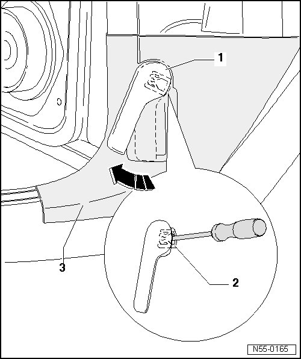

Operating Lever
Hood
Operating Lever
Removing

- Activate operating lever - 1 - in - direction of arrow - and open lid.
- Pull the operating lever - 1 - on the A-pillar lower trim - 3 - approximately 2 cm.
- Insert a small screwdriver into gap between operating lever - 1 - and clip - 2 -.
- Release operating lever again and unclip the clip from operating lever.
Installation
- Engage clip - 2 - completely into operating lever - 1 -.
- Then, press operating lever onto mount in mounting bracket.
• Before closing the hood, test the release lever and the release.